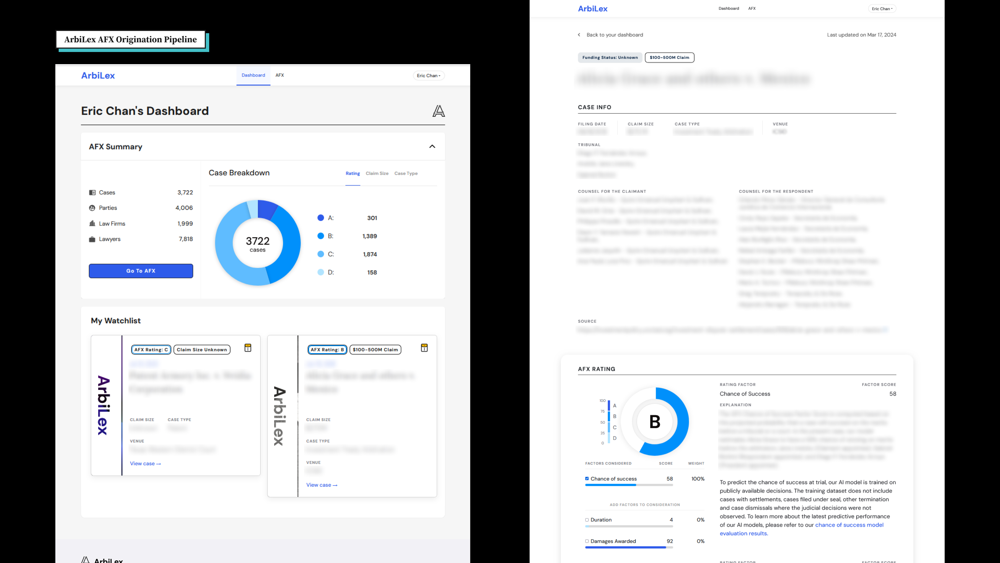

Eric Chan
An explorer at heart. The culmination of each journey into the unknown is returning home and having new perspectives to view what I have already seen. Allow myself to embrace ambiguity and find the signals in the noise.
ArbiLex AFX
Developing a continuous, AI-rated case pipeline platform to empower clients to assess top of the funnel dealflows at immense scale

ArbiLex Arbitrator Analytics
Transforming unstructured case data in empirical profiles of arbitrators with decision patterns and appointment history

ArbiLex Website
As ArbiLex's offering developed, I worked with in design constraints to evolve the website over time to suit the shifting landscape

Open Music Initiative x IDEO Summer Lab
Lead a summer lab of 19 fellows exploring the technical challenges of utilizing blockchain/distributed ledgers in the Music industry

IDEO CoLab Energy Futurism
Design futurism for how will we manage, distribution, and engage with our energy grid

IDEO x Nasdaq Renewable Energy Certificates
Creating self certified IoT solar panels that generated and issued blockchain digital assets

IDEO CoLab Nomad
Creating an open source, protocole-level project for subscribing to, processing, and publishing data with IPFS

IDEO CoLab Digital Identity
Creating portable, digital, verified identities by leveraging financiacial Institutional "KYC" Systems

Electroninks
Developed a silver based conductive ink pen that can draw circuitry for electrical education

Voxel 8
Creating multi-nozzle printers capable of 3D printing electronics with conductive silver colloid ink

Lewis Lab
Research on silver colloid sintering techniques at the Wyss Institute for Biologically Inspired Engineering

Visual Attention Lab
Research on short term memory retention based on visual information with different types of search approaches